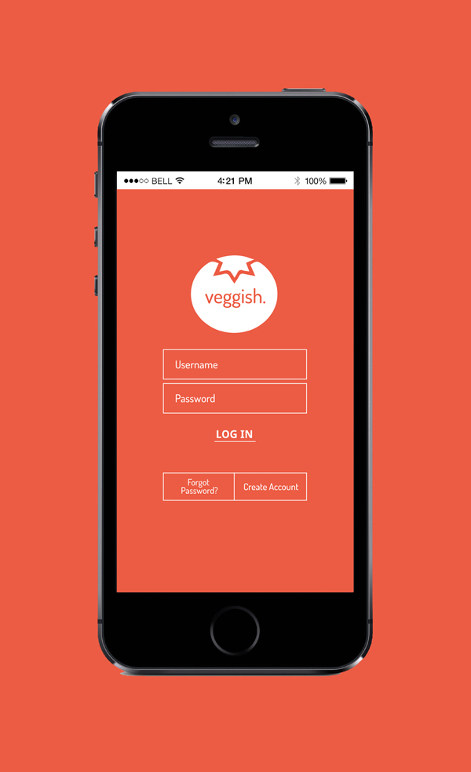
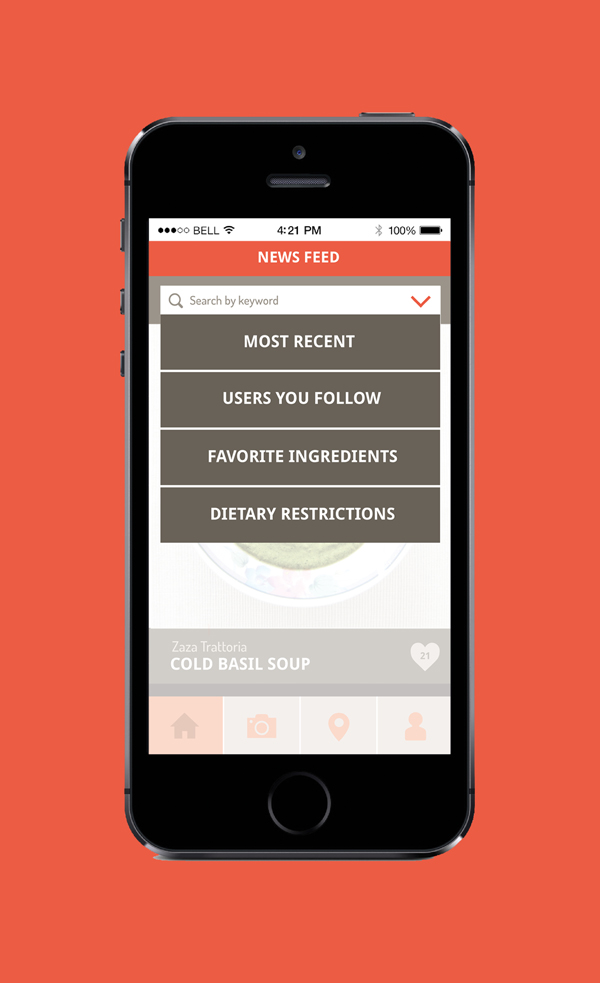
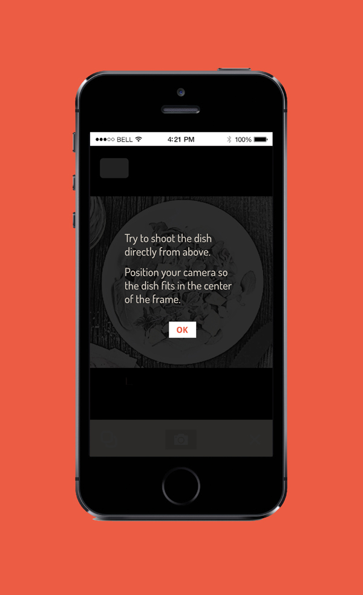
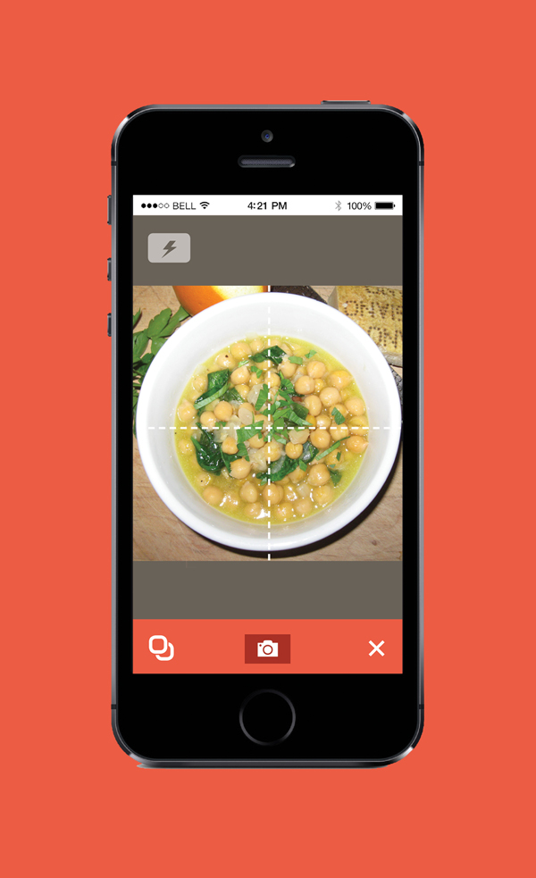
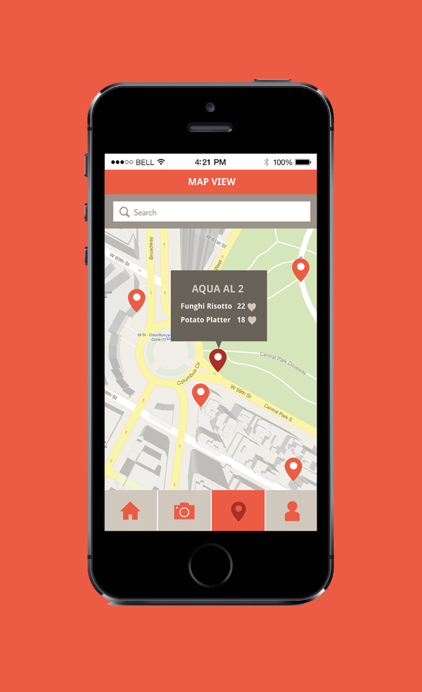
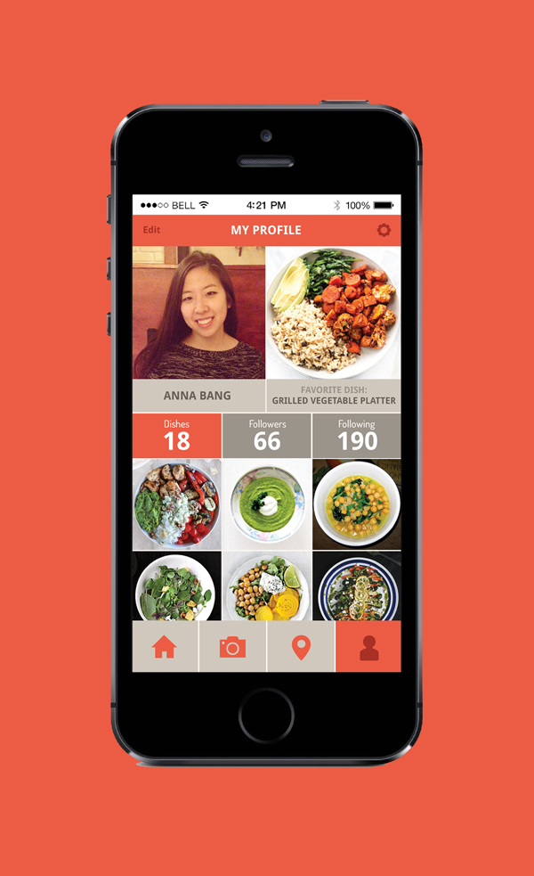

Anna Bang
- ABOUT
- RESUMÉ
Veggish Mobile App
Veggish is a mobile app that basically works like instagram for vegetarians. It is a network where users can share photos of their favorite vegetarian dishes in the area. The app is different from most vegetarian food searching apps because it asks users to photograph food directly from the top and allows the background of the photo to be blocked. That way, the photos of food people post would look more appetizing.






annabangdesign.com